Regulated Environments: Control Evidence and Change Review That Actually Ships for cloud governance tools
Part 2 focuses on regulated and security-sensitive teams: mapping controls to evidence, reducing review drag, and keeping change approvals fast without weakening custody boundaries.
Cloud governance tools work best when execution and ownership are explicit. This chapter extends a cloud governance framework with practical cloud finops decision loops so cloud governance tools remain measurable and repeatable.
Industry Solutions Whitepaper Series
This series is written as one connected argument. Part 1 defined invisible debt and operating contracts. Part 2 turns those contracts into regulated execution controls.
Regulated cloud operations rarely fail because teams do not know what good looks like. They fail because controls are described in policy language, while delivery and change systems run in ticket language. Part 2 closes that translation gap. The goal is simple: make each cost-governance decision reviewable by risk and executable by engineering without parallel paperwork.
1) The regulated operating problem is translation, not intent
Most regulated organizations already have solid control intent: least privilege, approval traceability, separation of duties, and retained evidence. But cloud-cost execution often bypasses those controls because optimization work is treated as an informal housekeeping activity. Teams terminate unused resources, resize compute, or release networking assets without a common evidence bundle. The outcome is predictable: security asks for proof later, engineers reconstruct context from logs, and finance cannot confirm realized impact with confidence.
This is why quarter-end audit friction is usually highest in teams that are otherwise technically mature. They can execute changes quickly, but they cannot package proof quickly. The missing layer is a control-to-evidence map that is enforced at decision time, not after implementation.
In Part 1, we described the execution contract as owner, due date, and source evidence. In regulated contexts, that contract needs two additional fields: approval route and retention class. Without them, actions remain operationally correct but governance-incomplete.
2) Build a control-to-evidence map that reviewers can consume in under five minutes
Regulated reviews move faster when each recommendation references a predefined control family. The map does not need to be large. For most cloud waste programs, six families are enough: identity and access, change authorization, runtime integrity, data handling, incident response, and financial reporting integrity.
A practical mapping pattern:
- Finding class: idle load balancer, orphaned volume, unattached IP, stale snapshot.
- Control family: change authorization + cost reporting integrity.
- Required evidence: source metadata, owner assignment, approval artifact, action timestamp, post-change validation.
- Retention policy: 90 days for routine cleanup, longer for regulated change classes.
This map should be embedded in the review packet itself. Do not ask reviewers to cross-reference three systems. If a reviewer must leave the packet to verify basic context, cycle time will degrade immediately.

3) Separation of duties without delivery paralysis
A common misconception is that separation of duties requires a slow approval ladder for every low-risk optimization. In practice, mature teams use risk-tiered approvals. Low-impact actions can be approved by service owners within policy guardrails. Medium-impact actions require cross-team acknowledgment. High-impact actions route through formal change boards. The key is to define these tiers once, then route automatically by finding class and estimated impact.
When teams skip tiering, they over-rotate into one of two failure modes. Either everything is âurgentâ and bypasses control gates, or everything is âsensitiveâ and queues behind weekly committees. Both produce hidden debt: the former in control risk, the latter in unresolved spend.
A better pattern is pre-approved playbooks with explicit boundaries. Example: âUnattached volume older than 30 days, no active dependency tag, and no legal hold tagâ can be closed in an expedited lane with retrospective sample audit. This preserves control discipline while protecting execution throughput.
4) Evidence packet design for security, finance, and engineering
One packet, three audiences:
- Security: who approved, what changed, and whether any credential or boundary assumptions were violated.
- Engineering: exact resource references, dependency context, rollback path, and post-change verification.
- Finance: baseline estimate, realized delta window, and unresolved backlog by owner group.
Most teams over-index on engineering detail and under-specify financial closure. For governance credibility, finance must see realized outcomes, not only âpotential savings.â This is where CWS-style evidence exports help: they can preserve resource-level lineage while still producing decision-ready summaries for non-operators.
In regulated settings, language discipline matters. Replace âcleanup doneâ with structured closure statements such as âchange executed under lane L2, validated at timestamp T, evidence pack E archived under retention class R.â Auditors and procurement reviewers trust precision, not enthusiasm.
5) Change-review cadence that does not collapse under quarter-end load
The most reliable cadence we observed is a two-loop model:
- Weekly operating loop: triage, assign, approve, execute, validate.
- Monthly governance loop: sample control validation, exception review, and policy adjustment.
The weekly loop protects execution speed. The monthly loop protects control quality. Trying to merge both into one meeting usually fails because operational urgency crowds out control learning.
Another practical rule: cap exception age. If an exception remains open for more than one cycle without renewed approval, treat it as stale and re-triage. Stale exceptions are one of the highest-probability sources of recurring cloud debt in regulated teams.
6) Field case: reducing audit rework in a multi-account review cycle
In one rollout window, a regulated software team handled findings across 42 cloud accounts with mixed ownership. Before introducing a control-to-evidence map, monthly review meetings repeatedly reopened the same questions: who approved each action, whether the resource was truly inactive, and where the proof was retained. Engineers spent more time reconstructing context than executing fixes.
After standardizing finding packets with control family, owner, approver, validation reference, and retention class, the team changed two behaviors. First, high-confidence actions moved through pre-defined approval lanes instead of ad-hoc escalation. Second, disputed findings were either closed with explicit evidence links or returned to triage with a clear reason code. Over a six-week period, reopened findings dropped significantly and average review preparation time fell by roughly one-third.
The key lesson was not tooling complexity. It was decision object quality. When every high-priority finding contained the same mandatory metadata, security, finance, and engineering reviewed the same truth instead of parallel interpretations.
7) Control depth without over-engineering
Regulated teams often overcorrect by trying to build a universal control framework in week one. That approach usually stalls implementation. A better approach is progressive control depth:
- Level A: owner, approver, action proof, retention class (minimum viable governance).
- Level B: lane-specific validation checklists and exception justifications.
- Level C: periodic statistical sampling and cross-team consistency audits.
Most organizations should run Level A for one full cycle before introducing Level B controls. Skipping this sequence increases process burden and encourages bypass behavior.
8) Procurement and risk-review lens
Technical buyers evaluating a cloud governance framework in regulated contexts usually ask three questions: where credentials live, how change decisions are proven, and how quickly evidence can be produced under request. Part 2 addresses all three by design: local custody, structured approval routes, and retention-ready evidence bundles.
For vendor and internal review teams, this means shorter time from âshow me proofâ to âhere is the packet.â In practice, this response speed can be as important as control completeness, because procurement and risk cycles are schedule-driven.
Industry Pain Signals and Required Outcomes
SaaS and internet teams. Pain signal: rapid release cadence leaves abandoned test networking and storage artifacts. Required outcome: short review loops with owner routing that does not block deployment speed.
Fintech and payments. Pain signal: cleanup work is repeatedly delayed by approval uncertainty and audit evidence gaps. Required outcome: control-to-evidence packets that reduce review friction without weakening change discipline.
Healthcare. Pain signal: teams avoid optimization actions when data-handling boundaries are unclear. Required outcome: explicit retention and access rules in each remediation package.
Manufacturing and retail (multi-region, multi-account). Pain signal: shared-account ownership ambiguity creates recurring backlog and reassignment churn. Required outcome: service-boundary routing matrix with stable decision lanes.
Implementation Checklist for Part 2
- Define six core control families and map each finding class to one family.
- Add approval route and retention class to each actionable recommendation.
- Adopt risk-tiered approval lanes instead of one-size-fits-all review queues.
- Publish one evidence packet template that serves security, engineering, and finance.
- Run a monthly exception-age review with forced re-validation for stale items.
Related Internal References
- Part 1: baseline operating contract and invisible debt mechanics.
- Security: trust-boundary commitments and local-first custody baseline.
- API Token Guide: token controls referenced in approval and evidence workflows.
- Release Ledger: release discipline and operational proof chain for governance programs.
Next Chapter
Continue to Part 3: Engineering Integration, CI/CD, and Runtime Guardrails for delivery guardrails, rollout-safe execution loops, and recurrence-prevention controls.
Run this industry playbook in your own environment
Use the same governance pattern your team just reviewed and validate it with real account evidence.